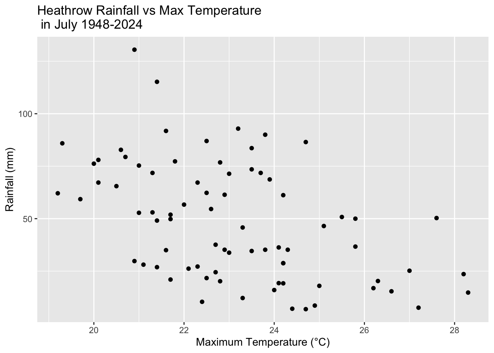
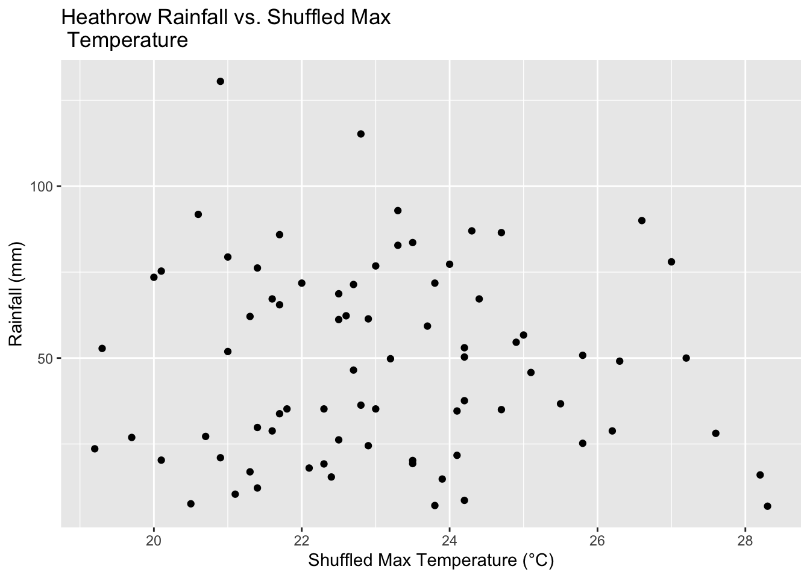
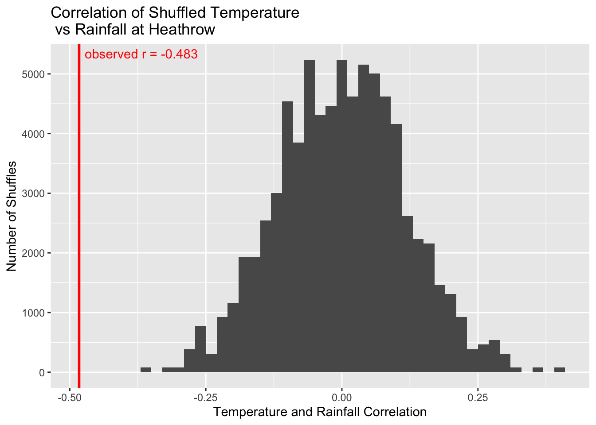
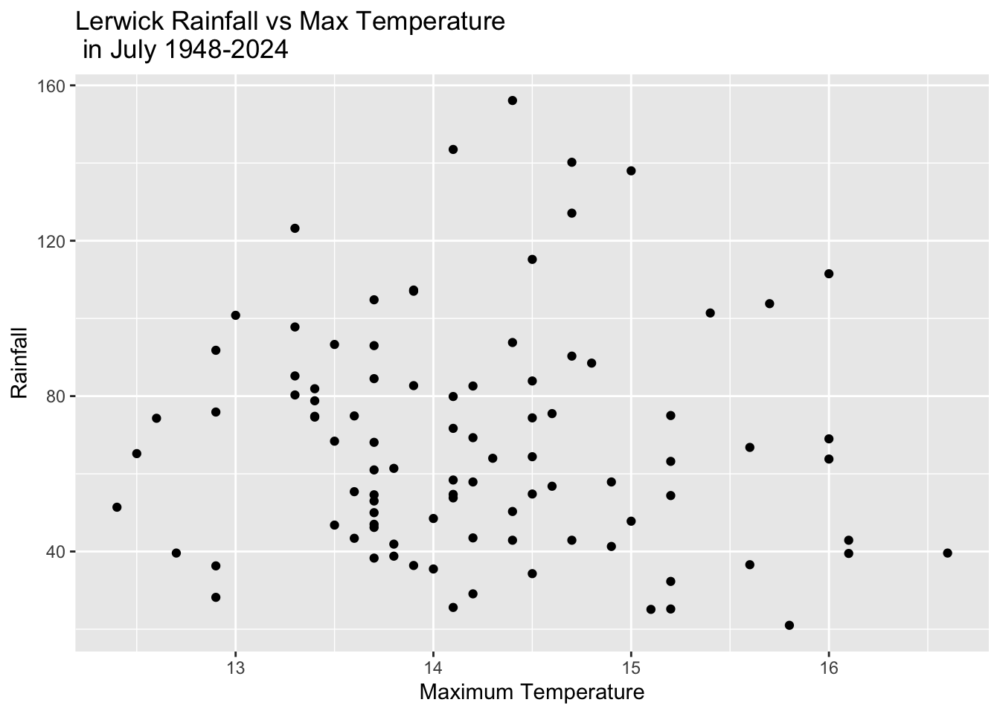

Code
library(tidyverse)
library(ggplot2)
library(reprex)
uk_weather <- readr::read_csv('https://raw.githubusercontent.com/rfordatascience/tidytuesday/main/data/2025/2025-10-21/historic_station_met.csv')The UK Weather data set explores climate data such as mean daily minimum and maximum temperatures, total rainfall, total sunshine hours and days of frost for each month in each year starting from 1941. The Historic UK Meteorological & Climate Data has been provided by the UK Met Office which is the national weather service in the UK. Thank you to Jack Davison who scraped the data and published it to Tidy Tuesday
In the UK, the weather is varied: some months bring very high temperatures, while others are cold. The UK is also known for high levels of precipitation. July is known to be one of the months whose weather has changed the most over the years. Using weather data from the 1940s to the 2020s from several weather stations around the UK, I hope to compare rainfall with maximum temperature in July of each year. So, my research question is: Is there a correlation between maximum temperature and total rainfall in July?
To understand this question I have chosen to focus on two stations: Heathrow and Lerwick. Heathrow is a station that is not far out of central London whereas Lerwick is the most northern station in the UK. I thought it would be interesting to compare the data of these two stations.
If you are traveling to London, England you might land in London Heathrow Airport. It is one of the worlds most busiest aviation hubs. Fun Fact! Did you know that there is in fact a secret terminal called The Windsor where only royal family members, celebrities, and VIP flyers can take off from?
From the data in the UK weather dataset, here is the scatterplot that helds us understand how rainfall and maximum temperature in the month of July are possibly related.
heathrow_july <- uk_weather |>
filter(station == "heathrow", month == 7) |>
select(station, month, year, tmax, rain)
ggplot(heathrow_july, aes(x = tmax, y = rain))+
geom_point() +
labs(
title = "Heathrow Rainfall vs Max Temperature \n in July 1948-2024",
x = "Maximum Temperature (°C)",
y = "Rainfall (mm)"
)
Explain the graph:
The calculated correlation between rainfall and maximum temperature at Heathrow station is: -0.482847First to begin our investigation of how the correlation changes as we shuffle the data points, we have to create functions that we can iterate to give us the shuffle data frame we want.
The first function that I have created is called shuffle points. The shuffle points function intends to take in a data frame and then shuffle the tmax temperatures from that dataset. The function will return the data frame with a new column called shuffle_temp with the shuffled values.
The second function I have created is to help visualize the different correlations of these shuffle data points. The shuffle correlation function takes in a data frame and samples the maximum temperature again (we have to be careful to set the seed before calling each function so that it maintains the order), and then calculates the correlation for each shuffled temperature and subsequent rain value.

set.seed(47)
shuffled_heathrow <- map(1:1000, shuffle_correlation, dataframe = heathrow_july)|>
list_rbind()
shuffled_heathrow |>
ggplot(aes(x = correlation)) +
geom_histogram(binwidth = 0.02) +
geom_vline(xintercept = correlation_heathrow, color = "red", linewidth = 1)+
annotate(
"text",
x = correlation_heathrow,
y = Inf,
label = paste("observed r =", round(correlation_heathrow, 3)),
color = "red",
hjust = -0.05,
vjust = 1.5
) +
labs(
title = "Correlation of Shuffled Temperature \n vs Rainfall at Heathrow",
x = "Temperature and Rainfall Correlation",
y = "Number of Shuffles"
)
